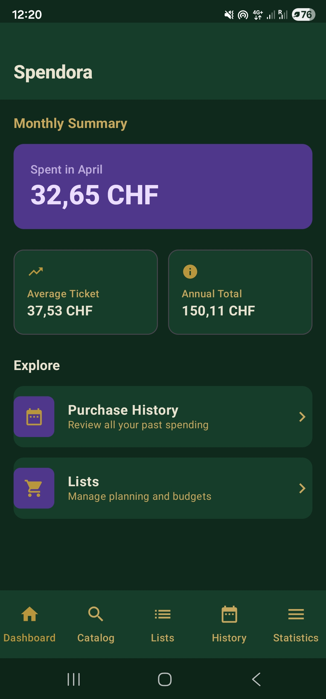
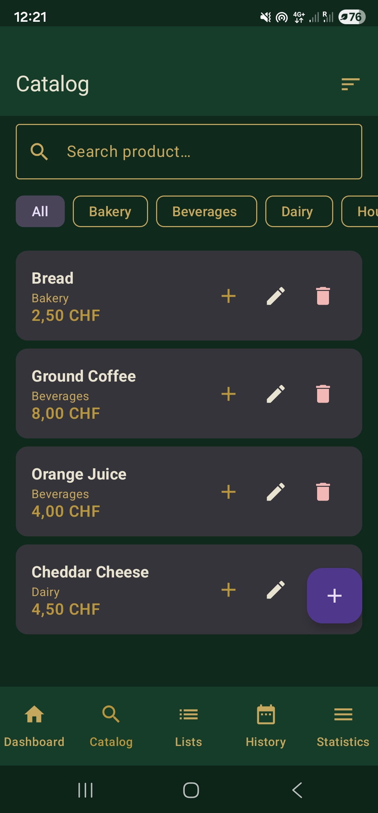
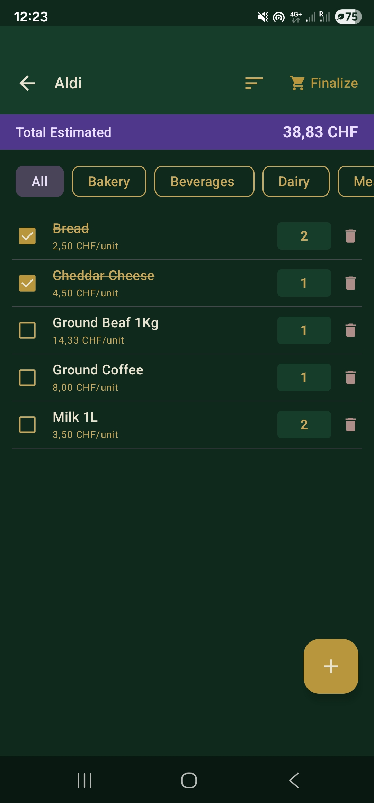
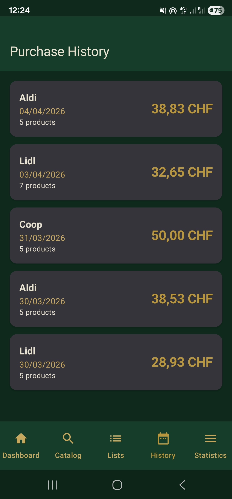
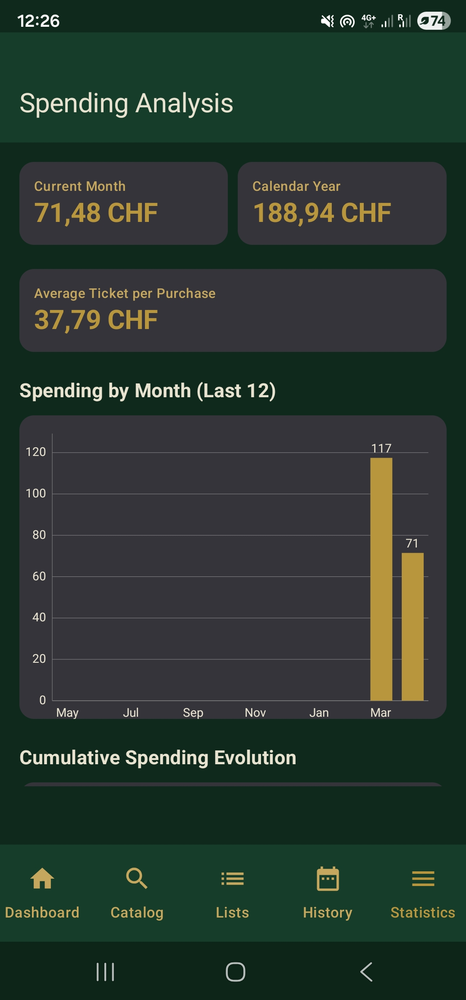
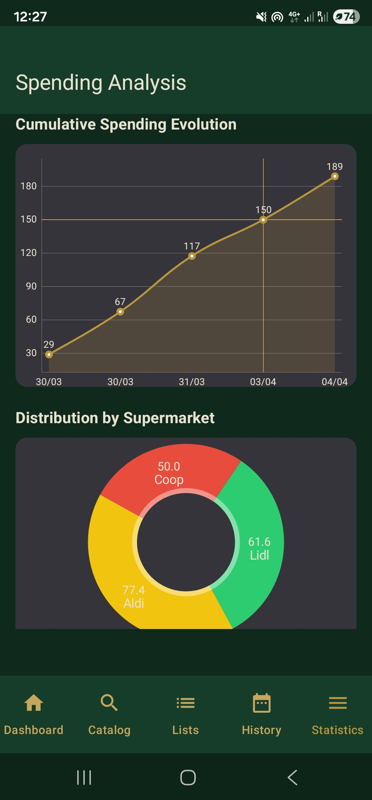

HOW IT WORKS
A quick visual guide to organizing products, building smarter shopping lists, and tracking your grocery budget with Spendora.
⬇ Download Spendora FreeSTEP 01
The moment you open Spendora, you see exactly where you stand — your total spending this month, your average ticket per shop, and your running annual total.
No digging through menus. No calculations. Just the numbers that matter, front and center.

STEP 02
Every product you add to Spendora is organized into a category — Bakery, Beverages, Dairy, Household, and more. Set the price once, and it's saved for every future list.
Categorizing your products isn't just for organization — it's the foundation that makes your shopping lists work like a map of the store, not just a random list of items.

STEP 03
Create a shopping list and select which products you need from your Catalog. Your Total Estimated updates instantly, so you always know what you're about to spend — before you reach the checkout.
Because your products are already organized by category, you can filter your list by category while you shop — Bakery, Dairy, Beverages, Meat. These categories usually match the actual sections of the supermarket. Select a category and only the matching items appear, so you move through the store section by section instead of scrolling through your entire list looking for what's next.

STEP 04
Once you finalize a list, it's saved to your Purchase History — with the store, the date, the number of products, and the total spent. Nothing to log manually.
Over time, this history becomes your personal record of exactly how your grocery spending evolves — trip by trip, store by store.

STEP 05
Spendora turns your purchase history into clear, visual statistics — current month, calendar year, average ticket, and monthly spending trends over the last 12 months.
No more guessing whether this month was expensive. The chart shows you, instantly.

STEP 06
See your cumulative spending evolve over time, and discover exactly how much of your budget goes to each supermarket you shop at — with a clear breakdown by store.
Once you see which store is consistently taking a bigger share of your budget, you can make an informed decision — is it worth it, or is it time to shift more of your shopping elsewhere?

Download Spendora free and start organizing your first shopping list in under two minutes.
⬇ Download Spendora Free